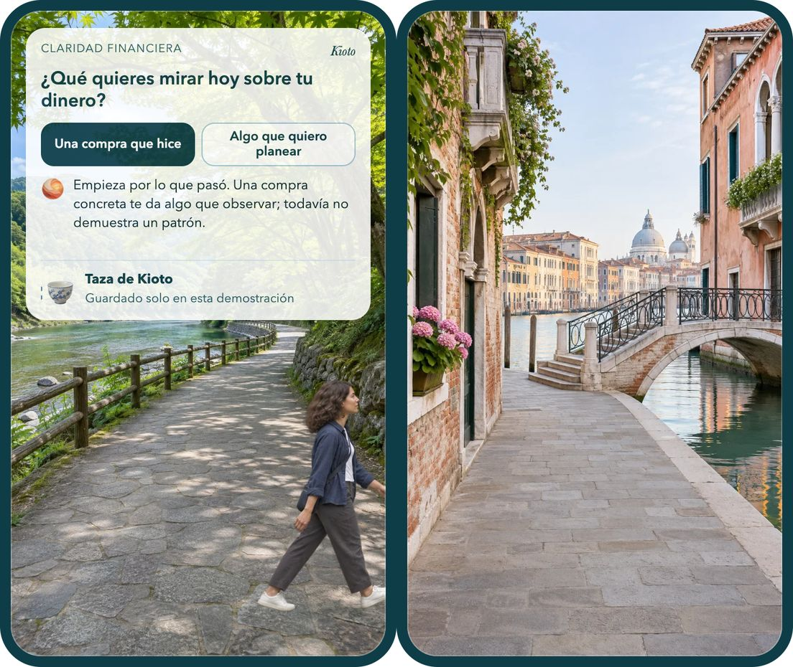

Una práctica diaria, un destino a la vez
Cada día, una pregunta te lleva un paso más lejos.
Elara es una práctica corta para mirar tu vida con más claridad. Llegas a un lugar, respondes una pregunta, te llevas una herramienta y un recuerdo. Después sigues caminando.
- Una pregunta al llegar
- Una herramienta que puedes usar hoy
- Un recuerdo para tu colección
- El camino sigue hasta el próximo destino
Unirme a la lista de espera Abrir el prototipo
Más adelante en el recorrido: Atlas, Explorar y Círculos. Todavía no están animados en este prototipo.

Si la animación no carga, la imagen de arriba resume la escena y los enlaces siguen funcionando.
Demostración: nada de lo que toques aquí cambia tu progreso real ni se publica.